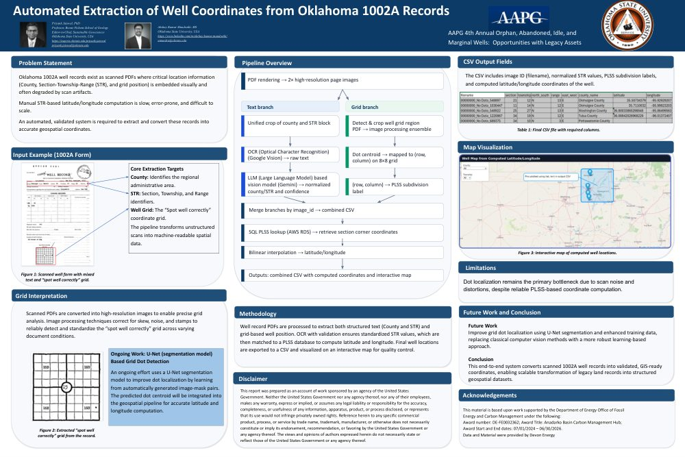

Case Study · Book of Earth
571,446 scanned pages. One question buried in every one of them: where, exactly, is this well?
Oklahoma State University, Boone Pickens School of Geology · DOE Award DE-FE0032362 (Anadarko Basin Carbon Management Hub) · Data: Devon Energy · Jul 2025 – Jul 2026 · one graduate student, one AI coding agent, one 7.4 GB laptop
▼ every story starts with paper
Book of Earth · Prologue
In 1911, when a crew finished drilling a well in Oklahoma, somebody filled out a form. They typed — or scrawled — the county, the Section–Township–Range legal description, and marked a dot on a little grid labeled "spot well correctly." Then the form went into a drawer. For a hundred and thirteen years, that's how Oklahoma remembered where its wells were.
Today, 571,446 of those "1002A" forms survive — as scanned PDFs. Typed, handwritten, stamped, skewed, photocopied, faded. And they matter more than ever: finding orphaned, abandoned, and idle wells for carbon-management planning means turning every one of those pages into a latitude and longitude a GIS system can use.
Book of Earth · Chapter One
Jul 12, 2025 My part of the story starts with an email. I wrote to Prof. Priyank Jaiswal at the Boone Pickens School of Geology asking about a volunteer research opportunity. His reply mentioned something else entirely: a student of his had started a computer-vision project and gone quiet. "Let me take another day to see if he responds."
Jul 19, 2025 The materials arrived: a Colab notebook that used Google Vision to find the "spot well" grid, a script that could extract one PDF at a time, a folium map — and one monumental asset, a 4,565,504-row PLSS corner-coordinate database the previous researcher had computed from three geospatial sources, down to quarter-quarter squares. I said yes the next day.
I'll be honest about where I stood: computer vision was brand new to me. I knew neural networks and Python; I had never made a machine read a stamped, skewed 1930s form. And the diagnosis of what I'd inherited was sobering — a prototype that worked beautifully, one PDF at a time, in Colab. No batch processing. No crash recovery. No state tracking. No cloud. Between that prototype and 571,446 documents stood everything I was about to spend a year building.
Book of Earth · Chapter Two
The first wall was the database. That beautiful 4.56-million-row PLSS table would not load anywhere I could afford. Colab sessions died. My laptop's memory fell short. For close to six months I tried workaround after workaround, and every one failed. The fix, when it finally came, wasn't a cleverer loading trick — it was a different architecture: move the data to S3, stand it up as PostgreSQL/PostGIS on AWS RDS, and query it instead of loading it. That unlock made coordinate resolution possible at scale — and it was my real introduction to cloud engineering.
Oct 22, 2025 First win. I ran a standalone extraction pass over the modern reports the prototype produced — county, Section–Township–Range, GPS coordinates, out to spreadsheets — and built the first interactive well map, clustered markers on a Folium page, published from a little repo called Oklahoma-Well-Locations. I sent it to Prof. Jaiswal: "you can click on each well location and see the details." It was small. It was also the first time the archive talked back.
Nov – Dec 2025 In one of our project talks, the professor made the suggestion that changed the pipeline's future: stop hand-annotating the grid dots — render, squint, click, store the row and column, repeat — and teach a model to find them. At half-a-million-record scale, manual annotation was a dead end. I started studying U-Net segmentation that winter.
Dec 2025 Then the archive itself arrived: thirteen ZIP files, ~571,000 scanned PDFs, 1911 to 2024. It immediately exposed the truth the single-form prototype had never faced — a century of layout drift. Grids in the top-left, bottom-left, top-middle, top-right. Descriptions in headers, in blocks, beside the grid. Forms that promised printed coordinates and delivered a blank. I spent months just studying where things sit on these pages, era by era. That study became the foundation of everything that followed.

🔍 Click to open the full poster (PDF) 🖼️ The poster (PDF) ↗ 📽️ The talk deck (PDF) ↗ original .pptx ⤓Book of Earth · Chapter Three
May 15, 2026 First commit of the production repository. Everything learned since July went into a modular pipeline — five extraction paths, one resumable ledger — and in the first nine days it was benchmarked on 4,607 real records: grid detection 100%, county 99%, dot 89%. The architecture is simple to draw and was merciless to earn:
scanned PDF (ZIP / S3)
└─ PDFDocumentManager (cached page renders, 2× resolution)
├─ latlong/ printed coordinates (decimal + DMS) — modern forms
├─ grid/ anchor phrase → measured-envelope crop → CV ensemble
│ └─ era-aware form classifier
├─ location/ STR extraction (per-era recipes → zones → full page)
├─ county/ structural anchors → fuzzy match → Gemini fallback
└─ dot/ U-Net segmentation → PLSS quarter-quarter label
└─ processing_status.csv (44-column resumable tracker)
└─ coord/plss_resolver (RDS, 5-pass, county-pinned directions)
└─ build_map_data.py → GitHub Pages interactive mapThe build ran on a laptop with 7.4 GB of usable RAM, and the laptop fought back. Long runs died silently; I traced the deaths through Windows event logs to memory exhaustion, not code. The fix was architectural: a near-zero-RAM loop dispatching fifty-record chunks as fresh processes, every one idempotent against the status tracker. That pattern ran 35,845-record campaigns crash-free at ~1,000 records an hour — through Wi-Fi drops, shutdowns, and restarts. Late May 2026 The same discipline went to the cloud: a first AWS batch dispatched 391 slices and put 2,439 wells on an S3-hosted viewer mid-run.
The scariest moments weren't crashes. A consolidation script once truncated the 514,000-row tracker to 3,334 rows; an enrichment step overwrote the coordinates file. Both recovered from backups — and both were answered structurally: additive-only merges, monotonic map builds, and a full seven-way reconciliation (disk ⇄ ZIPs ⇄ index ⇄ tracker ⇄ coordinates ⇄ S3 ⇄ site) so every record exists exactly once, everywhere.
Book of Earth · Chapter Four
Jun 16, 2026 The best decision of the project cost
nothing. Staring at the "worst" collections — modern records where grid detection
succeeded just 7% of the time — the realization landed: these aren't scans of
paper, they're digital-native documents. The county is decodable from the API
number, deterministically (35-011 → Blaine). The legal description is typed
text. And about 31% print their exact coordinates. They never needed computer vision
at all — they needed to be routed differently.
Routing by era turned the worst collections into the best — 88–98% mapped, for free, in minutes. The map jumped from 7,163 wells to 47,253 wells in a single day, at $0. In the days after: 12,662 wells upgraded to exact printed coordinates, and a ground-truth pass against the PLSS database caught a systematic mirror bug that had flipped ~2,000 wells to the wrong side of the state — direction, it turns out, is deterministic from the county alone in most of Oklahoma.
Field notes from half a million forms:
Free OCR scored 0% location agreement on old scans; embedded PDF text, 0% on county despite "95% text coverage." Flat text loses page geometry — you can't tell the well's county from the operator's address without knowing where the words sit.
Township and range anchor themselves with direction letters; the section is a bare number whose label OCR drops. Only 44% of legacy records parse a complete STR — the entire improvement agenda hangs on reading one number better.
Seven strategies run cheapest-first over 4.56M PLSS cells, a four-priority direction cascade fills in what OCR dropped, batch prefetch collapses ~3,500 queries into 2, and section-centroid is the explicit, labeled last resort.
Book of Earth · Chapter Five
Automation got the wells onto the map. Humans keep them honest — placed exactly where they're irreplaceable, and nowhere else.
Today the map holds 51,559 wells across all 77 counties, every pin linked to the original scan it came from — a living dataset that grows as eras are processed and corrections land.
| Layer | Choice | Note |
|---|---|---|
| OCR | Google Cloud Vision | ~$1.50 / 1,000 images; a 118K-image cache makes re-runs free |
| County cleanup | Gemini (free tier) | 7-key rotation with bounded backoff |
| Coordinates | PostGIS on AWS RDS | 4.56M PLSS quarter-quarter cells |
| Storage | S3 | 571,446 PDFs; every map pin links to its scan |
| Compute | AWS Batch (Fargate) | 1,000-vCPU quota approved — full backlog in ~3 hours |
| Publishing | GitHub Pages | Monotonic rebuilds: wells are added, never dropped |
Book of Earth · Chapter Six
Every lesson here was paid for — a scar first, a principle second.
Book of Earth · Epilogue
~470K legacy scans await the designed AWS Batch run — image build and Vision budget are the only gates. Three annotation campaigns are queued for free accuracy gains, the U-Net goes back to school on 1926–40 hollow-circle well marks, and an AAPG Bulletin manuscript is drafted. The map grows; the corrections loop keeps it honest.
Working sessions are journaled as a running companion to the commit trail:
Full-code scrutiny pass with robustness confirmed; the RDS county→direction backfill wired into the resolver; a pre-launch cloud bug caught where the container defaulted to Tesseract instead of Vision; the cost reality established — the legacy backlog is a Vision-budget decision, not an engineering gap — and an autonomous Gemini free-tier cool-down scoped for the parts that are free-limited.
Required Notices
Acknowledgements. This material is based upon work supported by the Department of Energy Office of Fossil Energy and Carbon Management under the following: Award Number: DE-FE0032362; Award Title: Anadarko Basin Carbon Management Hub; Award Start and End Dates: 07/01/2024 – 06/30/2026. Data and material were provided by Devon Energy.
Disclaimer. This report was prepared as an account of work sponsored by an agency of the United States Government. Neither the United States Government nor any agency thereof, nor any of their employees, makes any warranty, express or implied, or assumes any legal liability or responsibility for the accuracy, completeness, or usefulness of any information, apparatus, product, or process disclosed, or represents that its use would not infringe privately owned rights. Reference herein to any specific commercial product, process, or service by trade name, trademark, manufacturer, or otherwise does not necessarily constitute or imply its endorsement, recommendation, or favoring by the United States Government or any agency thereof. The views and opinions of authors expressed herein do not necessarily state or reflect those of the United States Government or any agency thereof.